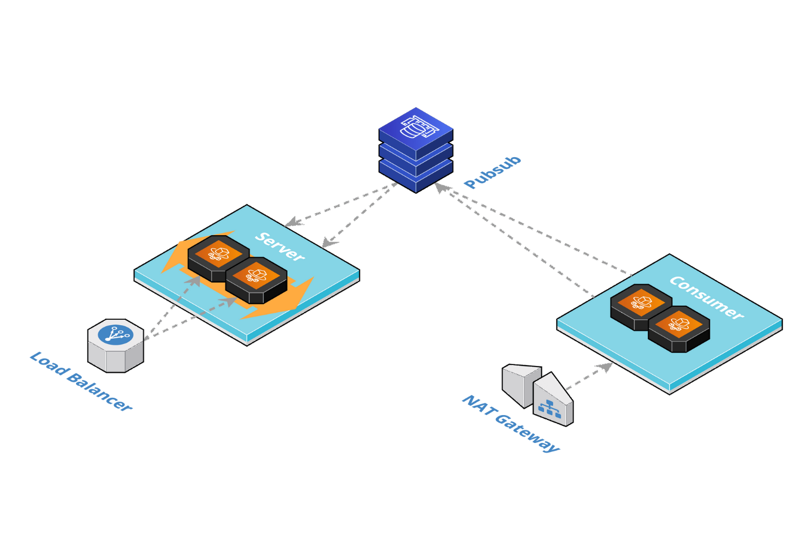
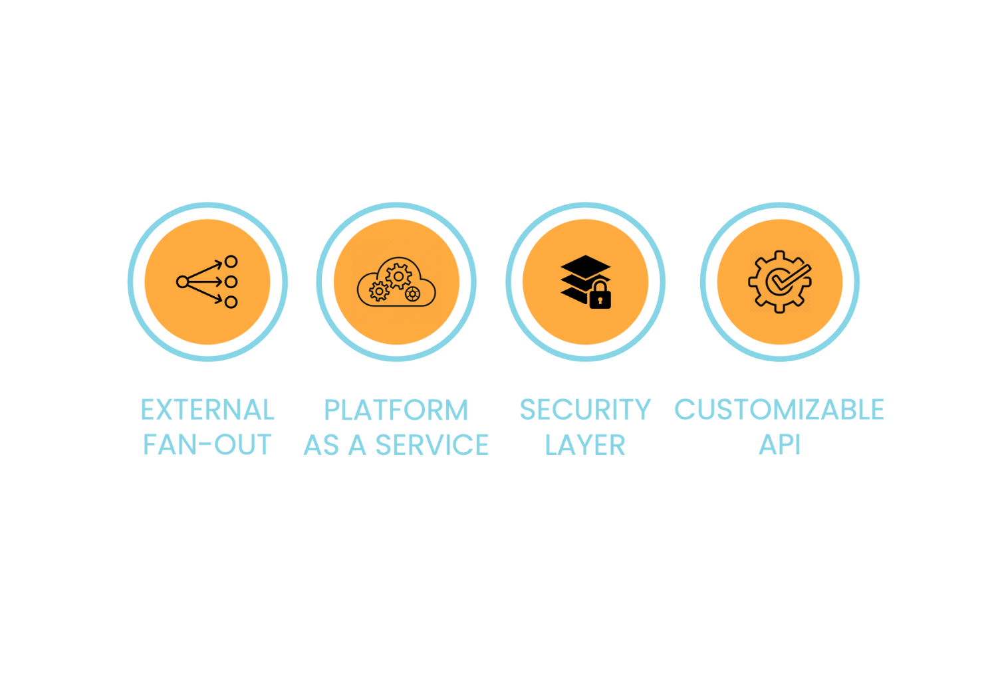

Fjord
Fjord is a open-source framework that allows end users to receive Kafka streaming data in real-time. Fjord is built with languages and technologies such as JavaScript, AWS ECS, AWS Fargate, AWS Elasticache for Redis, Docker and Server-Sent Events.


